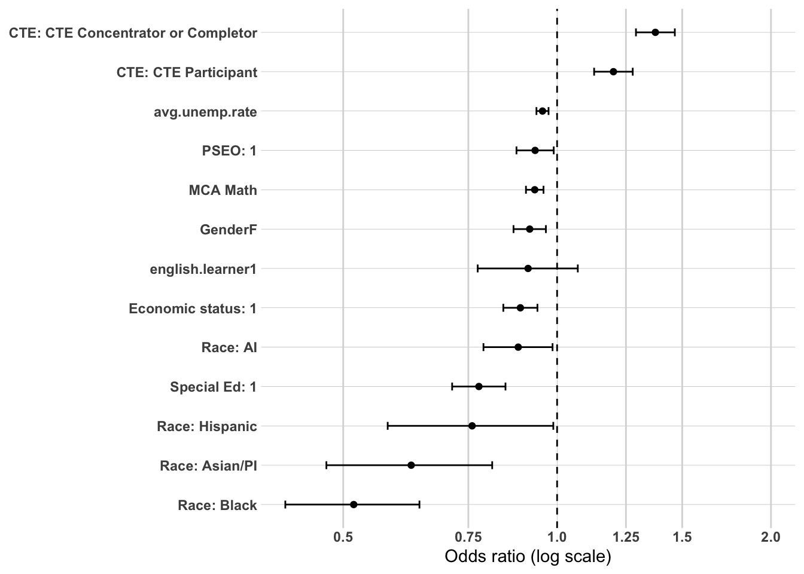
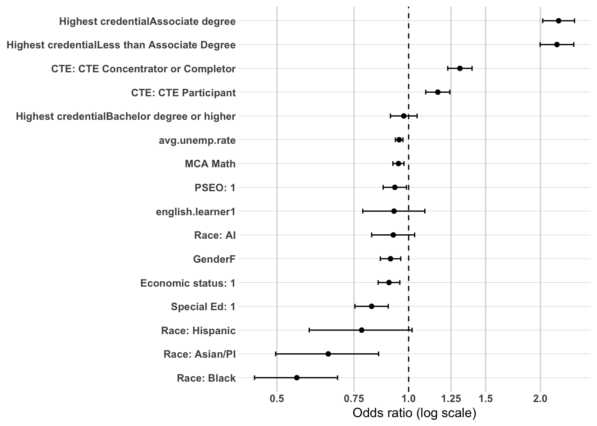
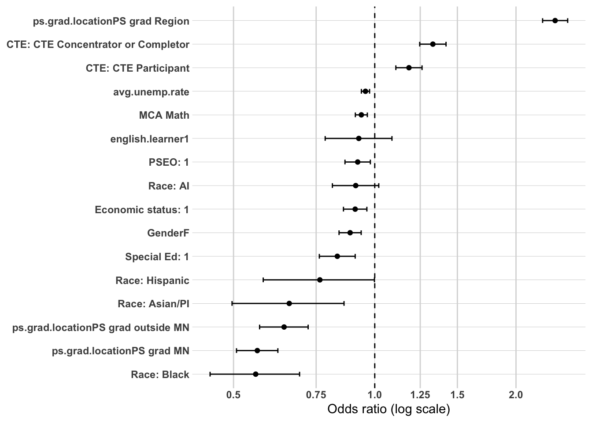
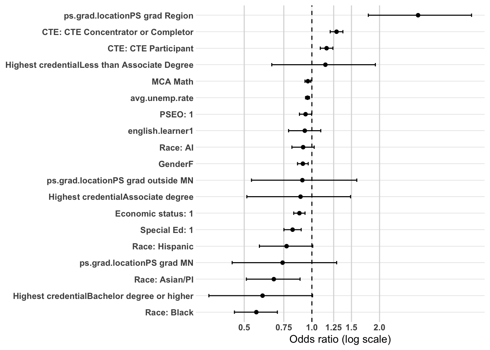
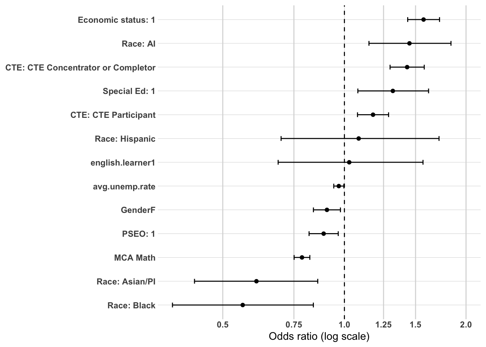

The purpose of this project is to explain which characteristics are associated with entry into distinct workforce participation pathways following high school graduation in Northeast Minnesota (EDR 3). These pathways include sustained employment in the region, sustained employment elsewhere in Minnesota, non-sustained employment, and having no Minnesota employment record.
The policy question of greatest interest is what factors are associated with sustained employment in the region. Earlier analysis relied on bivariate analyses (cross-tabulations, Cramér’s V, and ANOVA) to identify patterns of stratification across workforce participation outcomes. A consistent finding was that postsecondary experiences—particularly credential attainment and where education was completed—are strongly associated with long-term workforce attachment. Academic preparation, early college exposure (PSEO), career and technical education (CTE), and structural demographic factors also demonstrated meaningful relationships.
To strengthen confidence in these findings, a limited multivariate analysis is conducted using logistic regression. The purpose of this modeling is not to establish causality or build a predictive tool, but to examine whether the strongest bivariate relationships remain directionally consistent when key variables are considered simultaneously. This approach helps clarify whether preparation variables retain independent associations after accounting for credential attainment, and whether regional postsecondary completion remains influential when controlling for background and readiness.
Logistic regression is used here as a confirmatory tool rather than the primary analytic framework.
Methodology
Outcome Variable
The primary model predicts:
Sustained employment – region (binary outcome)
The dependent variable is coded as:
1 = Sustained employment – region
0 = All other workforce outcomes (including sustained employment – MN outside the region, non-sustained employment, and no MN employment record)
This specification focuses specifically on stable regional workforce attachment.
Independent Variables
To maintain interpretability and avoid overfitting, the analysis includes a limited set of theoretically and empirically important predictors identified in earlier analyses.
Demographic Variables
economic.status
SpecialEdStatus
englisher.learner
Gender
These variables capture structural differences that may shape both educational pathways and workforce attachment.
High School Preparation Variables
MCA.M (academic proficiency indicator)
pseo.participant (early college exposure)
cte.achievement (career and technical pathway participation)
These measures represent three distinct preparation mechanisms: academic readiness, early college participation, and technical skill development.
Postsecondary Mechanism Variables
Postsecondary variables are introduced in separate specifications to avoid redundancy and isolate distinct mechanisms:
avg.unemp.rate (local economic context at time of graduation)
This variable accounts for structural labor market conditions influencing immediate post–high school opportunities.
Variables were selected based on:
1. Strength of association in prior bivariate analyses
2. Policy relevance
3. Conceptual clarity
4. Avoidance of redundant or highly collinear measures
Analysis Approach
This multivariate analysis is structured as a series of theoretically guided logistic regression models designed to evaluate mechanisms associated with sustained regional employment. The goal is confirmatory testing of previously observed patterns rather than prediction or causal inference.
The dependent variable is a binary indicator of Sustained employment – region (1 = sustained employment in the region; 0 = all other workforce outcomes).
Modeling Strategy
Predictors are introduced sequentially to evaluate distinct mechanisms and to examine coefficient attenuation across specifications. This staged approach strengthens interpretability and reduces redundancy among highly related postsecondary variables.
Model 1: Structural and Preparation Baseline
Includes:
RaceEthnicity
economic.status
SpecialEdStatus
englisher.learner
Gender
MCA.M
pseo.participant
cte.achievement
avg.unemp.rate
This model evaluates whether structural background and preparation factors are independently associated with sustained regional employment.
Model 2: Credential Stratification Mechanism
Adds:
highest.cred.level
This model tests whether credential depth explains regional workforce attachment beyond preparation and demographic factors. Changes in coefficients from Model 1 to Model 2 are examined to assess attenuation and potential pathway mediation.
Model 3: Regional Anchoring Mechanism
In a separate specification, the model introduces:
ps.grad.location
This model evaluates whether completing postsecondary education within Northeast Minnesota is associated with sustained regional employment, holding structural and preparation factors constant.
Model 4: Combined Attainment and Geography
Includes both:
highest.cred.level
ps.grad.location
This specification assesses whether regional completion retains influence after accounting for credential depth, and whether geographic anchoring operates independently of attainment level.
Evaluation Criteria
Results will be reported using:
Odds ratios
95% confidence intervals
Statistical significance levels
Directional interpretation
Model comparison metrics (AIC and pseudo R²) will be used to assess relative improvement across specifications, but emphasis will remain on coefficient stability, attenuation patterns, and substantive interpretation rather than overall fit.
Interpretation Framework
Interpretation will focus on:
Direction and relative magnitude of associations
Changes in coefficients across models
Evidence of attenuation when postsecondary variables are introduced
Findings will be described as associations holding other included variables constant. No causal claims will be made.
This structured approach evaluates three central mechanisms underlying sustained regional employment in Northeast Minnesota:
Preparation Sorting Mechanism (academic readiness, early college exposure, technical pathways)
Regional Anchoring Mechanism (location of postsecondary completion)
Together, these models provide multivariate confirmation of patterns identified in earlier descriptive analyses while preserving conceptual clarity and interpretability.
Prep data
The first thing I need to do is setup my dataset for modeling. I’m going to create the workforce participation into a binary and will use grad.year.5 as my modeling year.
We now have 28,840 individuals to model with 12 variables not including grad.year.5.
Modeling - Sustained WF - Region
Model 1 - Demographics, HS Characteristics, HS Accomplishments
Model 1 serves as the baseline structural and preparation model, estimating the association between demographic background, high school academic preparation, and sustained regional employment five years after graduation. This specification excludes postsecondary attainment variables in order to isolate whether early academic readiness and structural characteristics independently differentiate workforce pathway outcomes. By modeling these predictors first, the analysis establishes whether observed disparities in regional workforce attachment emerge prior to postsecondary completion.
This baseline model tests the preparation mechanism: whether differences in academic proficiency and early college or career exposure are associated with sustained regional employment, holding structural background constant. Subsequent models will introduce postsecondary variables to assess whether these preparation effects persist, attenuate, or are mediated through educational attainment and geographic completion pathways.
The model retains nearly the full analytic sample, with 1,476 observations removed due to missingness.
The strongest associations in this specification are tied to CTE participation and persistent racial disparities.
Career and technical education shows the clearest positive relationship with sustained regional employment:
CTE concentrators/completers: approximately 38% higher odds of sustained regional employment relative to students with no CTE participation (OR ≈ 1.38).
These effects are substantively larger than those associated with academic preparation measures and indicate that CTE operates as a distinct regional anchoring mechanism at five years.
Racial disparities remain pronounced even after accounting for preparation and structural context:
Black students: approximately 48% lower odds of sustained regional employment relative to White students (OR ≈ 0.52).
Hispanic students: about 24% lower odds (OR ≈ 0.76).
American Indian students: approximately 12% lower odds (OR ≈ 0.88).
The magnitude of the Black and Asian/PI gaps is especially notable and persists net of academic proficiency, CTE participation, and local labor market conditions.
Academic mobility indicators show a consistent outward-orientation gradient:
Higher MCA Math scores: associated with lower odds of sustained regional employment (~7% lower odds per unit increase), suggesting that academically stronger students are more likely to pursue opportunities outside the region.
PSEO participation: modest negative association (~7% lower odds), consistent with early college exposure facilitating mobility beyond the region.
Structural background factors also demonstrate independent associations:
Special Education status: approximately 22% lower odds of sustained regional employment (OR ≈ 0.78).
Female students: about 9% lower odds relative to male students (OR ≈ 0.92).
English Learner status: small negative association (~9% lower odds), more modest in magnitude.
Local labor market context exerts additional influence:
Higher average unemployment rates: associated with lower odds of sustained regional employment (~5% lower odds per percentage-point increase), indicating that weaker local labor markets modestly reduce long-term regional workforce attachment.
Overall, Model 1 suggests that sustained regional employment in Northeast Minnesota reflects three intersecting forces: a strong positive alignment with CTE pathways, persistent racial disparities that remain even after accounting for preparation, and a modest academic mobility gradient in which higher academic achievement and early college exposure are associated with outward movement. Structural disadvantage and local labor market conditions contribute additional but comparatively smaller effects.
library(broom)library(forcats)library(stringr)or_plot <-tidy(model1, conf.int =TRUE, exponentiate =TRUE) %>%filter(term !="(Intercept)") %>%mutate(# Make labels nicer (edit these replacements to match your exact factor labels)term =str_replace_all(term, c("RaceEthnicity"="Race: ","economic.status"="Economic status: ","SpecialEdStatus"="Special Ed: ","pseo.participant"="PSEO: ","cte.achievement"="CTE: ","MCA.M"="MCA Math" )),# Put most important effects near the top (optional: tweak ordering later)term =fct_reorder(term, estimate) )ggplot(or_plot, aes(x = estimate, y = term)) +geom_vline(xintercept =1, linetype ="dashed") +geom_vline(xintercept =c(0.5, 0.75, 1.25, 1.5, 2),color ="grey85") +geom_point() +geom_errorbar(aes(xmin = conf.low, xmax = conf.high),orientation ="y",width =0.2 ) +scale_x_log10(breaks =c(0.5, 0.75, 1, 1.25, 1.5, 2),labels =c("0.5", "0.75", "1.0", "1.25", "1.5", "2.0") ) + theme_line +labs(x ="Odds ratio (log scale)",y =NULL )

Model 2: Adding Postsecondary Attainment
Model 2 extends the baseline specification by introducing postsecondary credential attainment (highest.cred.level) to assess whether high school preparation effects persist once educational completion is held constant. This model tests the attainment mechanism: whether differences in sustained regional employment reflect variation in credential level rather than solely high school readiness or demographic background.
By adding credential level, the analysis evaluates whether previously observed associations—particularly those related to CTE participation, math proficiency, PSEO participation, and race/ethnicity—attenuate when postsecondary attainment is accounted for. If coefficients for preparation variables shrink substantially, this would suggest that their influence operates indirectly through educational attainment. Conversely, if effects remain stable, this would indicate that preparation and attainment independently shape regional workforce retention. Model 2 therefore clarifies whether credential depth mediates, partially explains, or leaves unchanged the structural and preparation patterns observed in Model 1.
Model 2 introduces highest credential earned, testing whether postsecondary attainment depth explains sustained regional employment beyond structural background, preparation pathways, and local labor market conditions.
The model retains the full analytic sample (n = 27,364). Model fit improves substantially with the inclusion of credential level (AIC declines from 34,286 to 33,676), indicating meaningful explanatory gain. This confirms that postsecondary attainment depth contributes significant additional information beyond high school preparation and demographics.
The strongest effects in Model 2 are clearly tied to credential level.
Students earning sub-baccalaureate credentials show dramatically higher regional attachment:
Associate degree: approximately 120% higher odds of sustained regional employment relative to those who did not complete postsecondary education (OR ≈ 2.20).
Less than Associate degree (certificate/diploma): roughly 118% higher odds (OR ≈ 2.18).
Bachelor’s degree or higher: no meaningful difference from non-completers (OR ≈ 0.97), suggesting that four-year attainment does not increase regional attachment at five years.
These results indicate a strong credential stratification pattern: two-year and certificate pathways are strongly aligned with regional workforce anchoring, while bachelor’s attainment appears mobility-neutral or outward-oriented.
CTE participation remains independently associated with regional employment, though somewhat attenuated:
CTE concentrators/completers: approximately 31% higher odds (OR ≈ 1.31).
While reduced from Model 1, these effects remain substantial, suggesting that CTE operates both directly and indirectly through postsecondary credential pathways.
Racial disparities persist and remain large:
Black students: approximately 44% lower odds relative to White students (OR ≈ 0.56).
Asian/PI students: about 35% lower odds (OR ≈ 0.66).
Female students: about 9% lower odds relative to males (OR ≈ 0.91).
English Learner status: no statistically distinct association once attainment is included.
Local labor market conditions remain directionally consistent:
Higher average unemployment rates: associated with lower odds of sustained regional employment (~5% lower odds per percentage-point increase).
Overall, Model 2 demonstrates that credential depth is one of the most powerful predictors of sustained regional employment in Northeast Minnesota. Sub-baccalaureate credentials strongly anchor graduates to the regional workforce, while bachelor’s attainment does not. Preparation effects modestly attenuate but remain present, and racial disparities persist even after accounting for educational attainment. The substantial improvement in model fit underscores the central role of postsecondary pathways in shaping regional workforce attachment.
or_plot <-tidy(model2, conf.int =TRUE, exponentiate =TRUE) %>%filter(term !="(Intercept)") %>%mutate(# Make labels nicer (edit these replacements to match your exact factor labels)term =str_replace_all(term, c("RaceEthnicity"="Race: ","economic.status"="Economic status: ","SpecialEdStatus"="Special Ed: ","pseo.participant"="PSEO: ","cte.achievement"="CTE: ","MCA.M"="MCA Math","highest.cred.level"="Highest credential" )),# Put most important effects near the top (optional: tweak ordering later)term =fct_reorder(term, estimate) )ggplot(or_plot, aes(x = estimate, y = term)) +geom_vline(xintercept =1, linetype ="dashed") +geom_vline(xintercept =c(0.5, 0.75, 1.25, 1.5, 2),color ="grey85") +geom_point() +geom_errorbar(aes(xmin = conf.low, xmax = conf.high),orientation ="y",width =0.2 ) +scale_x_log10(breaks =c(0.5, 0.75, 1, 1.25, 1.5, 2),labels =c("0.5", "0.75", "1.0", "1.25", "1.5", "2.0") ) + theme_line +labs(x ="Odds ratio (log scale)",y =NULL )

Model 3: Geographic Completion Mechanism
Model 3 extends the prior specification by incorporating the location of postsecondary completion (ps.grad.location) alongside credential level. This model tests the geographic completion mechanism: whether sustained regional employment is associated not only with the depth of educational attainment, but also with where that education was completed.
By including graduation location, the analysis distinguishes between two related but conceptually distinct pathways. Credential level captures human capital depth, while graduation location captures regional attachment and institutional embeddedness. This specification evaluates whether the strong retention effects observed for associate-level credentials in Model 2 reflect the nature of the credential itself or the geographic proximity of the institution attended.
Model 3 therefore assesses whether regional graduation exerts an independent association with sustained regional employment, and whether the inclusion of geographic completion attenuates previously observed effects for credential level, CTE participation, and demographic characteristics. If coefficients for credential level shrink meaningfully, this would suggest that geographic embeddedness plays a central role in shaping long-term regional workforce retention.
The model retains the full analytic sample (n = 27,364). Model fit improves substantially relative to Model 2 (AIC declines from 33,676 to 32,922), indicating that graduation geography explains additional variation beyond credential depth alone. This confirms that location of attainment operates as a distinct mechanism in shaping regional workforce attachment.
The strongest effect in the model is graduation within the region:
Graduated in the region: approximately 142% higher odds of sustained regional employment relative to those who did not graduate postsecondary (OR ≈ 2.42).
This is the largest association in the model and clearly indicates a powerful regional anchoring mechanism tied to local postsecondary completion.
In contrast, completing postsecondary education outside the region is associated with lower regional attachment:
Graduated elsewhere in Minnesota: about 44% lower odds of sustained regional employment (OR ≈ 0.56).
This pattern indicates that graduation location strongly differentiates long-term workforce attachment, with in-region completion substantially increasing anchoring and out-of-region completion associated with outward mobility.
CTE participation remains strongly and independently associated with regional employment:
CTE concentrators/completers: approximately 33% higher odds (OR ≈ 1.33).
These effects remain robust even after accounting for postsecondary geography, suggesting that CTE provides a distinct workforce-aligned pathway into regional employment.
Racial disparities persist:
Black students: approximately 44% lower odds relative to White students (OR ≈ 0.56).
Female students: about 11% lower odds relative to males (OR ≈ 0.89).
English Learner status: not statistically distinct once other factors are included.
Local labor market conditions remain directionally consistent:
Higher unemployment rates: associated with lower odds (~4–5% lower per percentage-point increase).
Overall, Model 3 demonstrates that postsecondary graduation location is one of the strongest predictors of sustained regional employment in Northeast Minnesota. The substantial improvement in model fit and the magnitude of the regional graduation effect indicate that geography functions as a primary anchoring mechanism. CTE participation remains positively aligned with regional workforce attachment, while academic proficiency and early college exposure continue to reflect modest outward mobility patterns.
or_plot <-tidy(model3, conf.int =TRUE, exponentiate =TRUE) %>%filter(term !="(Intercept)") %>%mutate(# Make labels nicer (edit these replacements to match your exact factor labels)term =str_replace_all(term, c("RaceEthnicity"="Race: ","economic.status"="Economic status: ","SpecialEdStatus"="Special Ed: ","pseo.participant"="PSEO: ","cte.achievement"="CTE: ","MCA.M"="MCA Math","highest.cred.level"="Highest credential" )),# Put most important effects near the top (optional: tweak ordering later)term =fct_reorder(term, estimate) )ggplot(or_plot, aes(x = estimate, y = term)) +geom_vline(xintercept =1, linetype ="dashed") +geom_vline(xintercept =c(0.5, 0.75, 1.25, 1.5, 2),color ="grey85") +geom_point() +geom_errorbar(aes(xmin = conf.low, xmax = conf.high),orientation ="y",width =0.2 ) +scale_x_log10(breaks =c(0.5, 0.75, 1, 1.25, 1.5, 2),labels =c("0.5", "0.75", "1.0", "1.25", "1.5", "2.0") ) + theme_line +labs(x ="Odds ratio (log scale)",y =NULL )

Model 4: Highest Credential Level × Geographic Completion
Model 4 includes both postsecondary graduation location and credential depth, testing whether geography and attainment independently contribute to sustained regional employment after accounting for demographics, preparation, CTE participation, and local labor market context.
The model retains the full analytic sample (n = 27,364). Model fit improves further relative to Model 3 (AIC declines from 32,922 to 32,771), indicating that including both attainment and geography provides the strongest explanatory specification. However, the improvement over Model 3 is modest compared to the large improvement observed when geography was first introduced.
The dominant effect in this model remains regional postsecondary completion:
Graduated in the region: approximately 197% higher odds of sustained regional employment relative to non-graduates (OR ≈ 2.97).
This remains the single strongest predictor in the model, underscoring the powerful anchoring effect of completing postsecondary education within Northeast Minnesota.
Once geography is included, credential depth no longer independently predicts regional employment:
Associate degree: not statistically distinct from non-completers.
Less than Associate degree: not statistically distinct.
Bachelor’s degree or higher: associated with roughly 40% lower odds (OR ≈ 0.60), though confidence intervals approach overlap.
This pattern indicates that the strong sub-baccalaureate effects observed in Model 2 were largely driven by where those credentials were earned rather than credential depth alone. Geography absorbs much of the explanatory power previously attributed to associate-level attainment.
CTE participation remains positively and independently associated with regional employment:
CTE concentrators/completers: approximately 29% higher odds (OR ≈ 1.29).
These effects persist even after accounting for both credential level and graduation location, reinforcing CTE as a distinct workforce-aligned pathway.
Racial disparities remain substantial:
Black students: approximately 43–44% lower odds relative to White students (OR ≈ 0.57).
Economic disadvantage: approximately 12% lower odds.
Special Education status: roughly 18% lower odds.
Female students: about 9% lower odds.
English Learner status: not statistically distinct.
Local labor market conditions continue to show modest influence:
Higher unemployment rates: associated with lower odds (~4–5% lower per percentage-point increase).
Overall, Model 4 confirms that postsecondary geography is the primary anchoring mechanism in Northeast Minnesota. While credential depth initially appeared highly influential, its independent effect largely attenuates once location of completion is included. The modest additional improvement in model fit suggests that geography explains most of the postsecondary pathway effect. CTE participation remains independently aligned with regional employment, and substantial racial disparities persist across specifications.
or_plot <-tidy(model4, conf.int =TRUE, exponentiate =TRUE) %>%filter(term !="(Intercept)") %>%mutate(# Make labels nicer (edit these replacements to match your exact factor labels)term =str_replace_all(term, c("RaceEthnicity"="Race: ","economic.status"="Economic status: ","SpecialEdStatus"="Special Ed: ","pseo.participant"="PSEO: ","cte.achievement"="CTE: ","MCA.M"="MCA Math","highest.cred.level"="Highest credential" )),# Put most important effects near the top (optional: tweak ordering later)term =fct_reorder(term, estimate) )ggplot(or_plot, aes(x = estimate, y = term)) +geom_vline(xintercept =1, linetype ="dashed") +geom_vline(xintercept =c(0.5, 0.75, 1.25, 1.5, 2),color ="grey85") +geom_point() +geom_errorbar(aes(xmin = conf.low, xmax = conf.high),orientation ="y",width =0.2 ) +scale_x_log10(breaks =c(0.5, 0.75, 1, 1.25, 1.5, 2),labels =c("0.5", "0.75", "1.0", "1.25", "1.5", "2.0") ) + theme_line +labs(x ="Odds ratio (log scale)",y =NULL )

Multivariate Confirmation Summary
Across progressively specified logistic regression models, sustained regional employment in Northeast Minnesota is driven most strongly by postsecondary geography, with credential depth playing a secondary role once location is considered. High school CTE participation remains a consistent independent pathway, while academic preparation measures align modestly with outward mobility. Structural disparities persist across all specifications.
Model fit improves meaningfully as postsecondary variables are introduced:
Model 1 (Preparation + Structure): AIC ≈ 34,286
Model 2 (+ Credential Depth): AIC ≈ 33,676
Model 3 (+ Geography): AIC ≈ 32,922
Model 4 (+ Credential + Geography): AIC ≈ 32,771
The largest improvement occurs when postsecondary geography is introduced, indicating that location of completion explains more variation than credential depth alone.
Key Findings
Graduating within the region is the strongest predictor across all specifications:
Model 3: ~142% higher odds (OR ≈ 2.42).
Model 4: ~197% higher odds (OR ≈ 2.97).
Regional postsecondary completion is the single most powerful anchoring mechanism in the analysis.
Graduating elsewhere in Minnesota is associated with substantially lower regional attachment (~44% lower odds in Model 3).
Graduating outside Minnesota is also associated with lower regional attachment (~36% lower odds in Model 3).
Credential depth alone appears highly influential in Model 2:
Associate degree: ~120% higher odds.
Less than Associate degree: ~118% higher odds.
However, once graduation location is included (Model 4), these effects attenuate substantially, indicating that the earlier credential effect largely reflects where the credential was earned rather than credential depth itself.
Bachelor’s degree or higher is consistently mobility-aligned in the fully specified model (~40% lower odds), suggesting four-year attainment is associated with outward workforce trajectories.
CTE participation remains independently associated with regional retention across all models:
These effects persist even after accounting for both credential depth and graduation location, indicating that CTE functions as a direct workforce-alignment pathway rather than merely channeling students into regional colleges.
Academic mobility indicators show modest but consistent outward orientation:
Higher MCA Math scores: ~4–7% lower odds per unit increase.
PSEO participation: ~6–8% lower odds.
Structural disparities remain substantial across models:
Black students: ~43–48% lower odds.
Asian/PI students: ~32–38% lower odds.
Hispanic students: ~22–24% lower odds (marginal in later models).
Economic disadvantage: ~9–12% lower odds.
Special Education status: ~17–22% lower odds.
Female students: ~9–11% lower odds.
Local unemployment rates: modest negative association (~4–5% lower odds per percentage-point increase).
Overall Interpretation
Two primary mechanisms shape sustained regional employment in Northeast Minnesota.
First, regional postsecondary embeddedness is the dominant driver. Completing postsecondary education within the region dramatically increases the likelihood of long-term regional workforce attachment. The substantial improvement in model fit when geography is introduced confirms that where education is completed matters more than credential level alone.
Second, CTE participation operates as a stable and independent alignment pathway. While smaller in magnitude than the geography effect, CTE remains statistically robust across all specifications. This suggests that structured career pathways in high school directly connect students to regional workforce opportunities.
Credential depth initially appears highly influential, but much of that effect is absorbed by geography. Sub-baccalaureate credentials anchor students primarily when earned within the region. Bachelor’s attainment, particularly when earned outside the region, aligns with mobility rather than retention.
Academic proficiency and early college exposure are modestly mobility-oriented, indicating that stronger academic preparation may facilitate broader opportunity structures beyond Northeast Minnesota.
Importantly, racial and structural disparities persist even after accounting for preparation, credential attainment, and graduation location. Educational pathways alone do not fully explain differences in sustained regional workforce attachment.
Overall, the Northeast Minnesota results point to a clear anchoring pipeline: high school career alignment (CTE) and, most decisively, regional postsecondary completion drive long-term regional employment. Out-of-region completion and mobility-aligned academic pathways are associated with outward workforce trajectories.
Modeling - college completion and region
Prior models identified two dominant predictors of sustained regional employment: graduating from a postsecondary institution within the region and participation in high school CTE pathways. To further clarify the mechanism linking education to workforce retention, this supplemental analysis examines which demographic and high school characteristics are associated with completing college, no matter where, and then the modeling the sub-population of college completers on whether they completed college in the region or somewhere else.
This model does not replace the workforce participation analysis. Rather, it evaluates whether the same preparation and structural factors that differentiate workforce outcomes also predict entry into the regional postsecondary pathway. If variables such as CTE participation strongly predict in-region graduation, this would suggest that their influence on sustained regional employment operates, at least in part, through geographic educational alignment. Conversely, if certain predictors do not differentiate regional graduation, this would indicate a more direct association with workforce retention independent of postsecondary geography.
By modeling regional postsecondary graduation as the outcome, this analysis tests whether regional workforce retention reflects a two-step pipeline—high school pathway → regional postsecondary completion → regional employment—or whether these mechanisms operate in parallel.
The dependent variable is coded as:
1 = Graduated from a postsecondary institution within the region
0 = All others (including graduates elsewhere and non-graduates)
The full analytic sample is retained to evaluate the entire educational pipeline rather than restricting to postsecondary completers.
White AI Asian/PI Black Hispanic
0 0.5562546 0.7964753 0.6306069 0.8248773 0.7397661
1 0.4437454 0.2035247 0.3693931 0.1751227 0.2602339
Everything looks sound so let’s begin modeling.
Model 1: College completion, full population
This model estimates the association between demographic characteristics, academic preparation, and high school pathways with postsecondary completion, regardless of institution location. The outcome is coded 1 = completed postsecondary and 0 = did not complete. The full analytic sample is retained (n = 27,364).
The strongest negative predictors of completion are structural factors.
Special Education status: approximately 62% lower odds of completing postsecondary education (OR ≈ 0.38).
American Indian students: about 51% lower odds relative to White students (OR ≈ 0.49).
Black students: approximately 46% lower odds (OR ≈ 0.54).
Hispanic students: about 27% lower odds (OR ≈ 0.73).
Asian/PI students: not statistically distinct from White students once controls are included.
These effects are large and consistent, indicating that the most substantial sorting in the education-to-workforce pipeline occurs at the point of postsecondary completion.
Academic preparation variables show strong positive associations.
Female students: approximately 66% higher odds of completing postsecondary education (OR ≈ 1.66).
PSEO participation: about 44% higher odds (OR ≈ 1.44).
Higher MCA Math scores: roughly 29% higher odds per unit increase (OR ≈ 1.29).
These findings confirm that academic readiness and early college exposure substantially increase the likelihood of postsecondary completion.
Career and Technical Education (CTE) participation does not independently predict completion once other variables are included. Both CTE concentrators/completers and CTE participants are not statistically distinct from non-CTE students in this specification. This indicates that CTE functions differently in the broader pipeline, aligning more directly with workforce outcomes rather than increasing college completion rates.
Local labor market conditions show a very modest association, with slightly higher unemployment rates associated with marginally higher completion odds, though the magnitude is small.
Overall Interpretation
Postsecondary completion represents the most structurally stratified stage of the regional education-to-workforce pathway. Race, socioeconomic status, and Special Education status strongly differentiate who completes college, while academic preparation and early college exposure substantially increase completion likelihood.
These findings clarify earlier results. Large disparities observed in regional postsecondary graduation are driven primarily by overall completion gaps rather than geographic sorting among graduates. In contrast, CTE participation does not significantly affect completion, reinforcing the conclusion that its association with sustained regional employment operates through a more direct workforce-alignment mechanism rather than through increased college attainment.
White AI Asian/PI Black Hispanic
0 0.4247331 0.3100559 0.5428571 0.4672897 0.3707865
1 0.5752669 0.6899441 0.4571429 0.5327103 0.6292135
Looks good.
This model estimates the association between demographic characteristics, academic preparation, and high school pathways with graduating from a postsecondary institution within the region, restricted to individuals who completed postsecondary education (n = 11,987). The outcome is coded 1 = graduated in-region and 0 = graduated outside the region.
The strongest positive predictors of regional graduation reflect local alignment pathways.
CTE concentrators/completers: approximately 43% higher odds of graduating from a regional institution (OR ≈ 1.43).
CTE participants: about 18% higher odds (OR ≈ 1.18).
American Indian students: approximately 45% higher odds relative to White students (OR ≈ 1.45).
Special Education status: about 32% higher odds (OR ≈ 1.32).
These effects suggest that students with stronger local ties or structural constraints are more likely to complete postsecondary education within the region rather than elsewhere.
Academic mobility indicators show the opposite pattern.
Higher MCA Math scores: approximately 21% lower odds of graduating in-region per unit increase (OR ≈ 0.79).
PSEO participation: about 11% lower odds (OR ≈ 0.89).
These patterns indicate that academically stronger and early-college students are more likely to complete degrees outside the region once they enroll in postsecondary education.
Racial differences shift substantially once restricting to completers.
Black students: approximately 44% lower odds of graduating in-region (OR ≈ 0.56).
Asian/PI students: about 39% lower odds (OR ≈ 0.61).
Hispanic students: not statistically distinct from White students in this specification.
Local unemployment rates show a small negative association, though the magnitude is modest.
Overall Interpretation
Once college completion is held constant, regional graduation patterns look very different from overall completion disparities. The strongest predictors of graduating within the region are CTE participation and indicators of local structural constraint, while higher academic achievement and early college exposure are associated with graduating outside the region.
This confirms that large disparities in regional graduation observed earlier are driven primarily by completion gaps rather than geography alone. Among those who complete college, regional sorting reflects a combination of local alignment pathways (CTE) and mobility gradients associated with academic strength.
Together with prior models, the pipeline becomes clear: structural factors strongly shape who completes college; among completers, CTE and local attachment increase the likelihood of graduating within the region; and regional graduation, in turn, is the dominant predictor of sustained regional employment.
or_plot <-tidy(model_ps_grad_region, conf.int =TRUE, exponentiate =TRUE) %>%filter(term !="(Intercept)") %>%mutate(# Make labels nicer (edit these replacements to match your exact factor labels)term =str_replace_all(term, c("RaceEthnicity"="Race: ","economic.status"="Economic status: ","SpecialEdStatus"="Special Ed: ","pseo.participant"="PSEO: ","cte.achievement"="CTE: ","MCA.M"="MCA Math","highest.cred.level"="Highest credential" )),# Put most important effects near the top (optional: tweak ordering later)term =fct_reorder(term, estimate) )ggplot(or_plot, aes(x = estimate, y = term)) +geom_vline(xintercept =1, linetype ="dashed") +geom_vline(xintercept =c(0.5, 0.75, 1.25, 1.5, 2),color ="grey85") +geom_point() +geom_errorbar(aes(xmin = conf.low, xmax = conf.high),orientation ="y",width =0.2 ) +scale_x_log10(breaks =c(0.5, 0.75, 1, 1.25, 1.5, 2),labels =c("0.5", "0.75", "1.0", "1.25", "1.5", "2.0") ) + theme_line +labs(x ="Odds ratio (log scale)",y =NULL )

Synthesis of Analysis – Northeast Minnesota
Across a series of logistic regression models—progressively specifying high school preparation, postsecondary credential attainment, postsecondary geography, college completion, and regional graduation among completers—a clear and layered mechanism emerges. Sustained regional employment five years after high school is driven primarily by postsecondary geographic embeddedness, reinforced by CTE participation, and shaped throughout by strong structural disparities that begin at college completion.
Academic readiness increases college completion. Regional graduation anchors workforce retention. These are related but distinct mechanisms.
Big Takeaways
1. Regional postsecondary graduation is the dominant workforce retention mechanism.
Graduating from a postsecondary institution within the region is the single strongest predictor of sustained regional employment.
Regional graduation (any credential): ~142% to ~197% higher odds of sustained regional employment (OR ≈ 2.42–2.97 across models).
Graduating elsewhere in Minnesota: ~44% lower odds.
Graduating outside Minnesota: ~36% lower odds.
Once graduation location is included, credential level largely loses its independent effect. Associate degrees and sub-baccalaureate credentials no longer predict retention once geography is accounted for. Where the degree is earned matters far more than what degree is earned.
Geography—not credential depth—is the decisive workforce anchor.
2. College completion is the most structurally stratified stage of the pipeline.
Before geography even enters the picture, completion itself is highly unequal.
In the postsecondary completion model:
Special Education status: ~62% lower odds of completion (OR ≈ 0.38).
Higher MCA Math: ~29% higher odds per unit increase.
These results show that the largest structural sorting in the education-to-workforce pipeline occurs at college completion—not at regional sorting among graduates.
Regional graduation disparities observed earlier are largely downstream of completion gaps.
3. Among completers, regional sorting reflects local alignment versus mobility gradients.
When restricting to students who completed postsecondary education, the geography mechanism becomes clearer.
In the regional graduation model among completers:
CTE concentrators/completers: ~43% higher odds of graduating in-region.
CTE participants: ~18% higher odds.
Economic disadvantage: ~57% higher odds of graduating in-region.
American Indian students: ~45% higher odds.
Special Education status: ~32% higher odds.
In contrast, academic mobility indicators reduce regional graduation:
Higher MCA Math: ~21% lower odds per unit increase.
PSEO participation: ~11% lower odds.
Female students: ~9% lower odds.
This pattern suggests that academically stronger students and early-college participants are more likely to complete degrees outside the region, while locally aligned or structurally constrained students are more likely to remain within the regional postsecondary system.
Regional graduation is therefore shaped by both local attachment and mobility expansion.
4. CTE operates through both educational geography and direct workforce alignment.
CTE does not significantly increase overall college completion. However, among completers, CTE increases the likelihood of graduating in-region. In workforce models, CTE remains positively associated with sustained regional employment even after controlling for graduation location.
CTE concentrators/completers: ~29–38% higher odds of sustained regional employment in workforce models.
CTE participants: ~16–20% higher odds.
This indicates that CTE operates partly through regional educational pathways and partly as a direct workforce-alignment mechanism.
CTE matters—but its effect is modest relative to postsecondary geography.
5. Academic readiness aligns with opportunity expansion rather than regional anchoring.
Higher MCA scores and PSEO participation increase the likelihood of college completion but reduce the likelihood of regional graduation among completers. In workforce models, higher MCA scores are modestly associated with lower regional retention.
But it expands geographic mobility rather than reinforcing regional attachment.
Academic strength facilitates opportunity beyond the region.
6. Structural disparities persist into workforce outcomes.
Even after accounting for preparation, completion, and graduation location, disparities remain in sustained regional employment.
In workforce models:
Black students: ~43–48% lower odds.
Asian/PI students: ~32–38% lower odds.
Hispanic students: ~22–24% lower odds (weaker in fully specified models).
Economic disadvantage: ~9–12% lower odds.
Special Education status: ~17–22% lower odds.
Female students: ~9–11% lower odds.
These gaps are not eliminated by controlling for credential level or graduation location. Structural inequality remains embedded throughout the pipeline.
Relative Strength of Mechanisms
Across all models, the ordering of influence is clear:
Regional postsecondary graduation → strongest predictor of sustained regional employment.
College completion → most structurally stratified stage.
CTE participation → consistent but secondary alignment mechanism.
Academic readiness → promotes completion but aligns with mobility rather than retention.
Structural background factors → shape completion and persist into workforce outcomes.
Overall Conclusion
Sustained regional employment in Northeast Minnesota is shaped by a layered pipeline:
Structural factors strongly influence who completes college.
Among completers, local alignment pathways—especially CTE—shape who graduates within the region.
Regional graduation is the dominant anchor for long-term regional workforce attachment.
Credential attainment alone does not drive retention. Geography does.
Academic readiness expands opportunity but does not anchor students regionally. Four-year and outward pathways align with mobility rather than local retention. CTE contributes independently, both through regional educational pathways and through more direct workforce alignment.
Most importantly, structural disparities emerge at college completion and persist through regional graduation and into workforce outcomes. Educational pathways explain part of regional retention, but they do not fully account for persistent racial and socioeconomic gaps.
In short, Northeast Minnesota’s workforce retention pipeline is geographically anchored, institutionally embedded, partially reinforced by career-aligned high school preparation, and constrained by enduring structural inequality that begins well before workforce entry.
What This Analysis Means for Northeast Minnesota Economic & Workforce Developers
These findings reflect strong statistical associations rather than proven causal effects. However, the consistency and magnitude of the relationships provide clear directional insight for regional workforce strategy.
If the goal is to keep more young people in Northeast Minnesota to fill workforce shortages, the data point to one dominant pattern: Students who graduate from a postsecondary institution within the region are far more likely to be working in the region five years later.
Graduating from a regional institution is associated with roughly 2.4 to 3 times higher odds of sustained regional employment compared to students who do not graduate in-region. This is the single strongest relationship observed in the analysis.
In practical terms: Students who earn their degree here are much more likely to be employed here later.
1. Regional Colleges Are Strongly Linked to Workforce Retention
Graduating from a regional postsecondary institution is associated with approximately 142% to 197% higher odds of sustained regional employment, even after accounting for academic preparation, demographics, and economic background.
By contrast:
Graduating elsewhere in Minnesota is associated with roughly 44% lower odds of regional employment.
Graduating outside Minnesota is associated with roughly 36% lower odds.
These results suggest that workforce retention is closely linked to institutional embeddedness and local ties. The location of postsecondary completion is far more strongly associated with retention than credential level alone.
For workforce developers, this implies that strengthening partnerships with regional colleges—especially 2-year public institutions—may be one of the most effective levers available.
2. The Largest Sorting Occurs at College Completion
Before geography even enters the picture, the most substantial differences appear at college completion.
Students who are:
Economically disadvantaged have about 59% lower odds of completing college.
In Special Education have about 62% lower odds.
American Indian students have about 51% lower odds.
Black students have about 46% lower odds.
This indicates that many potential regional workers are lost earlier in the pipeline.
Improving college completion—particularly for low-income and historically underrepresented students—appears strongly linked to increasing the pool of individuals who could later contribute to the regional workforce.
Retention is associated with geography, but supply begins with completion.
3. CTE Is a Consistent but Secondary Lever
Career and Technical Education (CTE) participation shows stable positive associations:
CTE concentrators/completers have about 29–38% higher odds of sustained regional employment.
Among students who complete college, CTE concentrators are about 43% more likely to graduate from a regional institution.
CTE is not strongly associated with overall college completion, but it is associated with both regional graduation and regional employment. This suggests that CTE pathways are linked to local workforce alignment in ways that extend beyond postsecondary attainment alone.
Expanding high-quality CTE programs aligned with regional industry needs may therefore support workforce retention, even if their effect is more modest than that of regional college graduation.
4. Academic Readiness Expands Opportunity—Often Beyond the Region
Higher academic performance increases college completion:
Higher MCA Math scores are associated with about 29% higher odds of completion per unit increase.
PSEO participation is associated with about 44% higher odds of completion.
However, among students who complete college:
Higher MCA scores are associated with about 21% lower odds of graduating in-region.
PSEO participants are about 11% less likely to graduate in-region.
These patterns suggest that academically strong students are more geographically mobile. Academic readiness increases progression into postsecondary education, but it is not strongly associated with regional retention.
For workforce developers, this may mean that retaining high-achieving students requires earlier employer engagement, internship pipelines, and visible regional career opportunities.
5. Structural Disparities Persist Into Workforce Outcomes
Even after accounting for preparation, completion, and graduation location:
Black students have about 43–48% lower odds of sustained regional employment.
Asian/PI students have about 32–38% lower odds.
Economically disadvantaged students have about 9–12% lower odds.
Students in Special Education have about 17–22% lower odds.
Educational pathways explain part of the variation in workforce retention, but not all of it. Structural disparities remain associated with employment outcomes even after controlling for key educational factors.
This suggests that workforce strategies may also need to address hiring practices, advancement pathways, and inclusive workplace supports—not just educational alignment.
Strategic Implications for the Region
The analysis points to a layered system:
College completion is the most structurally unequal stage.
Regional postsecondary graduation is the strongest predictor of regional workforce attachment.
CTE provides a consistent, though secondary, alignment pathway.
Academic strength increases completion but is associated with greater geographic mobility.
Taken together, the results suggest that strengthening regional colleges, improving completion rates, expanding aligned CTE pathways, and building clearer bridges from education to local employment are all strongly associated with higher regional workforce attachment.
Geography is the strongest anchor observed in the data.
Completion is the largest structural barrier.
CTE is a meaningful alignment tool.
While these findings do not establish causation, the magnitude and consistency of the associations provide clear guidance for regional workforce development strategy.